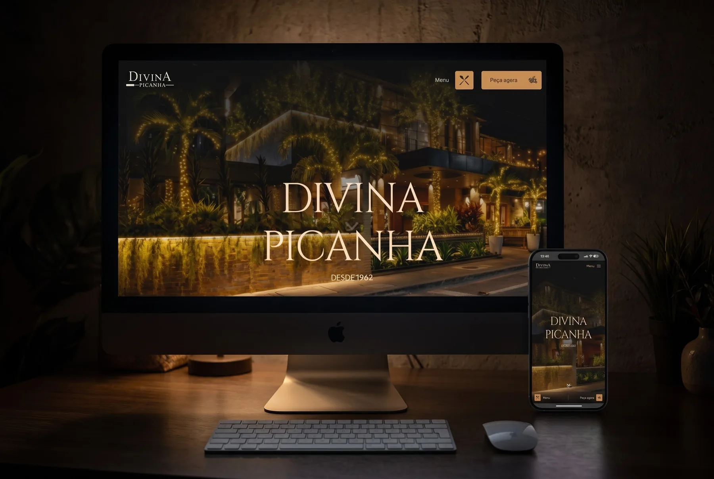

01 / 05Cliente · Entregue
Grupo Don Tallento
Plataforma web do grupo, com o site da Divina Picanha, cardápio digital e painel de gestão. Banco de dados modelado em Postgres com acesso por papel (RLS) e publicação contínua na Vercel.
Next.js 14SupabaseRLSVercel
